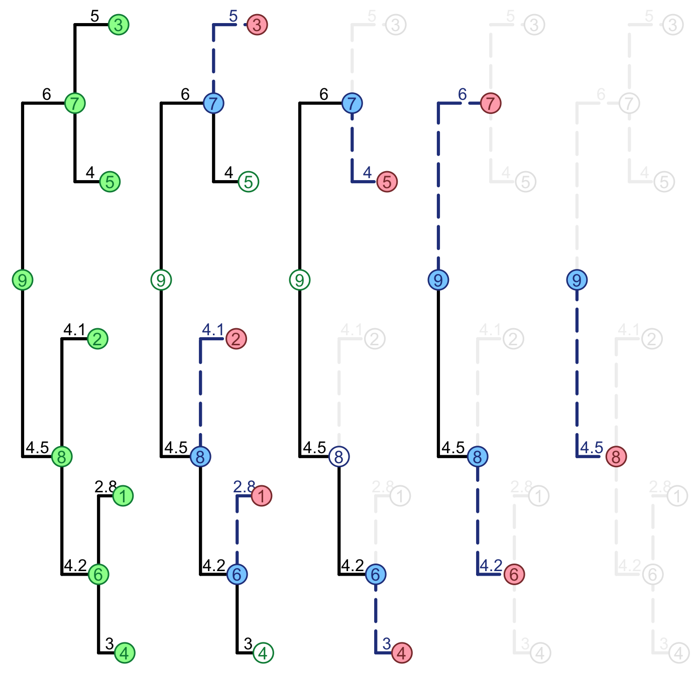

SPLITT.RmdBefore you consider using the SPLITT C++ library, try to answer the following questions for yourself.
If you don’t understand what I mean, chances are high that you simply do not need to deal with SPLITT at that point. The reason is that I wrote SPLITT to solve a very specific problem, which I’ve encountered many times during my doctoral studies: perform the same type of calculation for all nodes in a big tree, where each node is related to some specific data and the calculation for one node uses as input the result from the calculation performed on its daughter nodes. This is what I mean by post-order traversal. A pre-order traversal is the same with only one difference – replace the term daughter nodes with the term parent node in the sentence above.
This very much depends on how frequently do you need to perform the tree-traversal. If you only need to do it once or a couple of times with a given dataset, then I don’t see much need of speeding this up. In my specific use-case, I needed to run a tree traversal millions of times and this was by far the heaviest computational operation during the analysis of the biological data at my disposal. It would not be an exaggeration, if I say that, without SPLITT, my PhD would have needed several more decades of computation time on a modern high performance computing cluster. This was reduced to a few months, thanks to the fast C++ implementation, based on SPLITT.
When I said big tree I meant a tree of more than 100 tips, sometimes, more than 10000 tips. This is not a hard rule of thumb, but parallel traversal will have a performance benefit mostly on a big tree. This depends on other factors as well, such as the computational and memory complexity of the node traversal operation. If the tree is relatively small and the operation is very simple (e.g. the addition or multiplication of a few double-precision numbers), then it is very likely that using SPLITT in parallel mode would not be faster than using it in serial mode. Yet, using SPLITT might still be a good idea in this case if you currently have an implementation in a slowly interpreted language, such as R, and wish to have a faster C++ version - in this case a serial SPLITT-based implementation is probably going to be between 10 and 200 times faster than the R-version.
Here is what you need before you can start working with SPLITT:
A C++11 compiler. So far I’ve been able to compile a SPLITT-based program on OS X and Linux using the following compilers:
Optional: Rcpp and RcppArmadillo packages in R. Installing these packages will be needed if you wish to use SPLITT as a back-end for an R-package you are writing.
Being a software library SPLITT does not provide a high-level end-user interface.Rather, SPLITT is used via its application programming interface (API). In other words, you use the library by putting your application specific code in several C++ classes. The easiest way to do this is to start from an example of such classes and use this example as a skeleton for your own code, i.e. replace the code in the example with your application specific data-types, and traversal operations. Because I was using SPLITT mostly from an R-package, at present, there is only an R-package example. Even if you are not familiar with R, this guide should still help you understand how to use SPLITT from within your C++ program.
I recommend installing the latest package version from github. From the R-prompt, type the following command:
devtools::install_github("venelin/SPLITT")## Downloading GitHub repo venelin/SPLITT@master
## from URL https://api.github.com/repos/venelin/SPLITT/zipball/master## Installing SPLITT## '/Library/Frameworks/R.framework/Resources/bin/R' --no-site-file --no-environ --no-save --no-restore --quiet CMD \
## INSTALL \
## '/private/var/folders/nb/_b5mkf753p3c86s9nrpk33gc002289/T/Rtmp8yPtMN/devtools8ae05d066e24/venelin-SPLITT-5d6f057' \
## --library='/Users/vmitov/Library/R/3.5/library' --install-tests## ## Building SPLITT vignettes
## * installing *source* package ‘SPLITT’ ...
## ** libs
## /usr/local/clang6/bin/clang++ -I"/Library/Frameworks/R.framework/Resources/include" -DNDEBUG -fopenmp -I"/Users/vmitov/Library/R/3.5/library/Rcpp/include" -I"/Users/vmitov/Library/R/3.5/library/RcppArmadillo/include" -I/usr/local/include -fPIC -Wall -g -O2 -c RCPP__AbcPMM.cpp -o RCPP__AbcPMM.o
## /usr/local/clang6/bin/clang++ -I"/Library/Frameworks/R.framework/Resources/include" -DNDEBUG -fopenmp -I"/Users/vmitov/Library/R/3.5/library/Rcpp/include" -I"/Users/vmitov/Library/R/3.5/library/RcppArmadillo/include" -I/usr/local/include -fPIC -Wall -g -O2 -c RCPP__Tree.cpp -o RCPP__Tree.o
## /usr/local/clang6/bin/clang++ -I"/Library/Frameworks/R.framework/Resources/include" -DNDEBUG -fopenmp -I"/Users/vmitov/Library/R/3.5/library/Rcpp/include" -I"/Users/vmitov/Library/R/3.5/library/RcppArmadillo/include" -I/usr/local/include -fPIC -Wall -g -O2 -c RcppExports.cpp -o RcppExports.o
## /usr/local/clang6/bin/clang++ -dynamiclib -Wl,-headerpad_max_install_names -undefined dynamic_lookup -single_module -multiply_defined suppress -L/Library/Frameworks/R.framework/Resources/lib -L/usr/local/lib -o SPLITT.so RCPP__AbcPMM.o RCPP__Tree.o RcppExports.o -fopenmp -F/Library/Frameworks/R.framework/.. -framework R -Wl,-framework -Wl,CoreFoundation
## installing to /Users/vmitov/Library/R/3.5/library/SPLITT/libs
## ** R
## ** tests
## ** byte-compile and prepare package for lazy loading
## ** help
## *** installing help indices
## *** copying figures
## ** building package indices
## ** testing if installed package can be loaded
## * DONE (SPLITT)library(SPLITT)## Loading required package: RcppMiniBenchmark(N=10, Ntests = 1000)## Performing a mini-benchmark of the PMM log-likelihood calculation with
## a tree of size N= 10 ;
## Calling each likelihood calculation Ntests= 1000 times ...
## CPU: Intel(R) Core(TM) i7-4850HQ CPU @ 2.30GHz
## OpenMP version: 201107
## Number of threads: 8
## Measuring likelihood calculation times...
## model mode time (ms) speedupX
## 1: PMM R (serial) 0.220 1.0000
## 2: PMM C++ (AUTO) 0.012 18.3333
## 3: PMM C++ (SINGLE_THREAD_LOOP_POSTORDER) 0.011 20.0000
## 4: PMM C++ (SINGLE_THREAD_LOOP_PRUNES) 0.012 18.3333
## 5: PMM C++ (SINGLE_THREAD_LOOP_VISITS) 0.012 18.3333
## 6: PMM C++ (MULTI_THREAD_LOOP_PRUNES) 0.081 2.7160
## 7: PMM C++ (MULTI_THREAD_LOOP_VISITS) 0.046 4.7826
## 8: PMM C++ (MULTI_THREAD_LOOP_VISITS_THEN_LOOP_PRUNES) 0.061 3.6066
## 9: PMM C++ (MULTI_THREAD_VISIT_QUEUE) 0.290 0.7586
## 10: PMM C++ (MULTI_THREAD_LOOP_PRUNES_NO_EXCEPTION) 0.052 4.2308
## 11: PMM C++ (HYBRID_LOOP_PRUNES) 0.040 5.5000
## 12: PMM C++ (HYBRID_LOOP_VISITS) 0.054 4.0741
## 13: PMM C++ (HYBRID_LOOP_VISITS_THEN_LOOP_PRUNES) 0.050 4.4000library(ape)
newick <- '(((1:3,2:2.8)6:4.2,3:4.1)7:4.5,(4:4,5:5)8:6)0;'
tree <- read.tree(text=newick)
x0 <- 0.1
sigma2 <- 0.25
sigmae2 <- 1
set.seed(1)
g <- rTraitCont(tree, model = "BM", root.value = x0,
sigma = sqrt(sigma2),
ancestor = FALSE)
x <- g + rnorm(n = length(tree$tip.label), mean = 0, sd = sqrt(sigmae2))
PMMLogLikCpp(x, tree, x0, sigma2, sigmae2, mode = 1)## [1] -8.157par(mfrow=c(1,5))
par(mar=c(0,0,0,0))
par(oma=c(0, 0,0, 0))
PlotParallelTraversal(tree)
## C++ object <0x7ff995644970> of class 'SPLITT__OrderedTreeStringNodes' <0x7ff995727a60>